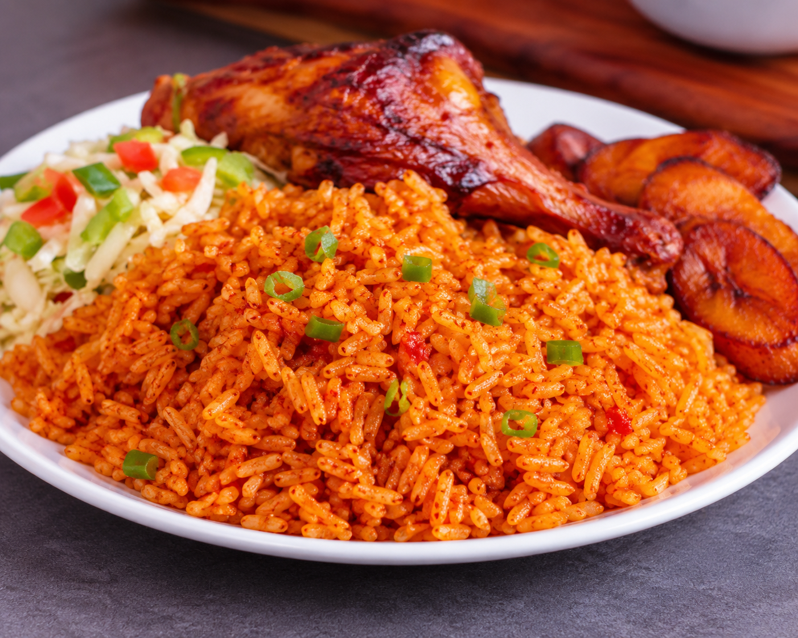

Jollof Recipe

Description/Recipes
Jollof rice is a universal dish which is very much well known across
Africa.
Jollof rice is a meal that contains alot of flavours that gives joy to our
taste buds.
It contains various recipes such as African spices,chicken,beef,fish,rice
and tomatoes as the main ingredient.
Ingredients
- Rice
- Tomatoes
- Pepper and Onions
- Seasoning
- Spice
- Vegetable oil
- Chicken/Beef
Steps
- Wash and rinse the rice,then keep aside.
- Wash and blend tomatoes,pepper and onions.
- Heat oil in the pot and fry the blended tomatoe paste.
- When properly fried,add seasoning and spices of choice.
- Add washed rice into the pot of fried paste and add some water.
- Mix properly and cover with foil to steem well,then allow to cook.
- Cook or fry your chicken,beef or fish then serve with the jollof rice.